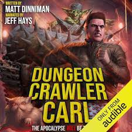
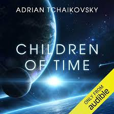
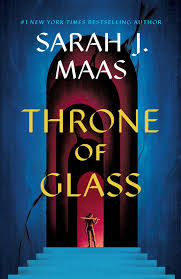
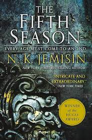

I have always been big into reading. You know those kids who are on their tablets at restaurants that people love to complain about? That was me, but with books. I much preferred the company of books to people when I was young. It definitely waned as I got older and after having my second child, my reading mostly consisted of The Pout Pout Fish, Llama Llama Red Pajamas, and others. But as my boys got older, my passion for reading was reignited. Throw in the easy access of audiobooks... and I am pretty much living in different realities.
There are many genres/types of literature that I enjoy, including:

Do you like talking cats with sassy, over the top personalities? Of course you do. The Dungeon Crawler Carl series currently contains seven books, with the eighth being released this year. The story is about a cat that has been awakened, Princess Donut, and her human Carl who are thrown into this absolutely unhinged, televised alien dungeon crawl with the rest of what remains of humanity after the Earth is decimated. This is one series I definitely recommend listening to as the voice acting is some of the best in existence. You will find yourself laughing often and then as the series progresses, the anger and tears on behalf of Princess Donut and Carl and all the companions the collect along the way will follow.

The Children of Time series current contains three books with a fourth being released this spring. It's about the human civilization who destroy Earth...as they do, terraforming another planet and releasing a nano-virus that is intended to speed up the evolution of a primate-like species there. As the massive ship, carrying a remaining portion of humanity, makes their way to this planet they expect the primates to evolve fast enough that they could be used as enslaved labors to help jumpstart a new human civilization. However, something goes terribly wrong and the nano-virus instead targets a different species...spiders. That's right, I said spiders.

The Throne of Glass series contains eight books where a legendary assassin, forced into slave labor, is released on the condition that she competes to become the king's champion. What starts as “try to survive this competition and maybe earn my freedom” quickly turns into “oh… the entire world might be in trouble and I might be the one who has to deal with it.” And she totally does.

This trilogy starts with the Fifth Seasons, where it introduces a world that’s constantly getting wrecked by massive, apocalyptic climate disasters. In this world, there are people who are born with powers that have the capability to control earthquakes and volcanoes so naturally, the controlling political authority villainize them and brutally controls them. The story follows characters trying to survive on a planet that is literally breaking. It’s part survival story, part mystery, part emotional gut‑punch, all wrapped in some of the most unique worldbuilding in modern fantasy. If you are okay with books that will leave you sobbing on the floor with devastation, I highly recommend this trilogy.